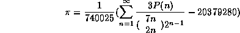
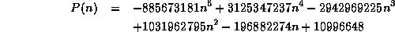
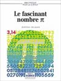

(Jan 10 1997)
Simon Plouffe has
found an algorithm to compute the n'th digit of Pi in any base in
O(n^3log(n)^3) with little memory. We give here an improvement of his algorithm
to get a speed of O(n^2). The postscript file of the
alpha version
of the article: pi_n2.ps
, the html
version, and the corresponding implementation in C: pi.c
.
(Feb 27 1997) A faster implementation which
uses the Gosper formula : pi1.c .
(Feb 4 1997)
While testing some numerical relations with the PSLQ
algorithm
, I found this exotic formula for Pi:

with

(Aug 2003)Boris Gourevitch and Jesus Guillera show how to demonstrate similar formulas.
|
 |